先说说什么是 branch
按照 Subversion 的说法 , 一个branch是某个development line (通常是主线也即 trunk) 的一个拷贝 , 见下图 :
branch 存在的意义在于 , 在不干扰 trunk 的情况下 , 和 trunk 并行开发 , 待开发结束后合并回 trunk 中 , 在 branch 和 trunk 各自开发的过程中 , 他们都可以不断地提交自己的修改 , 从而使得每次修改在repository中都有记录 ;
设想以下场景 , 如果你的项目需要开发一个新功能 , 而该功能可能会修改项目中的绝大多数文件 , 而与此同时 , 你的另一位同事正在进行 bug fix , 如果你的新功能不在 branch 中开发而直接在 trunk 中开发 , 那么你极有可能影响另一位同事的bug fix , 他在 bug 修复中可能会遇到各种各样的问题 , 因为你的频繁提交代码引入了过多的不稳定因素 ; 你可能会说 , 那我在开发的过程中不提交不就行了 , 等到我全部开发结束我再提交 , 是 , 你可以这么做 , 那还要版本控制干什么呢 ? 也许等到你最后提交代码的时候 (也许一周 , 也许两周 ? ) , 你会发现有一大堆 conflict 等着你 resolve...
那么 , 正确的做法是什么 ? 使用 branch , 从 trunk 创建 branch , 然后在你的 branch上开发 , 开发完成后再合并到trunk中 ;
下面说说什么叫做合并
很好理解 , 当 branch 开发完成后 (包括必要的测试) , 将 branch 中的修改同步到 trunk 中 , 这个过程有可能包括修改文件 , 增加文件 , 删除文件等等 ;
说到这里 , 貌似本文差不多可以结束了 , 不就是分支和合并么 ? 只要再简单地说说如何建立分支和如何合并就可以收尾了 , 可能只需两个命令 , 也可能只需鼠标点几下然后键盘敲两下即可 ; 其实事情远非这么简单 , 爱动脑筋的同学可能会问了 , 将 branch 的改动 merge 到 trunk 的时候 , 和上文说的直接在 trunk 中全部开发完然后提交有何区别 ? 你最后还不是要处理一大堆conflict ?
这个问题问得非常好 , 其实这正是本文的重点 : branch 和 trunk 在并行开发的过程中如何感知对方 , branch 如何才能在开发过程中不会和 trunk 越走越远 , 导致最后无法合并 ? 试想一下 , 如果在你开发 branch 的过程中 , trunk中 的某个类文件已经被删除了 (这可能是另外一个家伙在另一个 branch 上开发了两周后才合并到 trunk 的) , 而你竟然在这个类文件上做了大量修改 , 试问你到最后合并回 trunk 的时候该有多蛋疼 ? 解决这一问题的唯一手段是 , branch 要不停地和 trunk 保持同步 , 你要及时地知道 trunk 都做了什么修改 , 这些修改是否会影响你正在开发的新功能 , 如果需要 , 你必须及时调整 branch 的代码 , 使之能与 trunk "兼容" ;
那么如何让 branch 和 trunk 保持同步 ?
合并 , 从 trunk 合并到 branch , 你没听错 , 是从 trunk 合并到 branch ; 关于 TortoiseSVN 的合并 , 有几点需要注意 :
下面我将一步步的演示如何一次完整的 branching 和 merging , 包括创建分支 , 分支开发 , 分支和主线同步 , 分支合并到主线的全过程 , 甚至包括如何在本地创建一个测试用的 repository ;
1. 本地Repository的创建
repository 的创建很简单 , 假设我要在 D:\TortoiseSVN\TestRepository 目录中创建 repository , 只需右键 TestRepository 目录 , 依次选择 "TortoiseSVN" -> "Create repository here" 便完成了 repository 的创建 ;
2. Checkout
假设要 Checkout 到 D:\TortoiseSVN\TestSVN , 同样很简单 , 在 D:\TortoiseSVN 目录下创建 TestSVN 目录 , 然后在该目录上右键 , 选择 "SVN Check out..." , 在弹出的窗口中的 "URL of repository" 中填入"file:///D:/TortoiseSVN/TestRepository" , 其他默认即可 , 最后点击ok ;
3. trunk 创建新项目 MyProject
相当简单就不赘述了 , 只列出本次操作所作出的修改 :
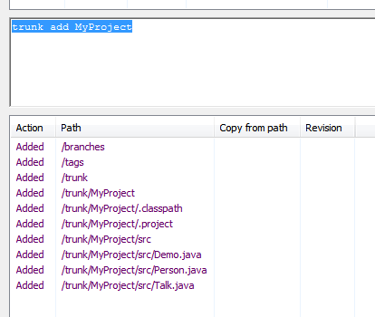
4. 创建 branch
在 /trunk/MyProject 目录上右键 , 依次选择 "TortoiseSVN" -> "Branch/tag..." , 在弹出窗口的 "To URL" 中填入分支的地址 , 在这里目标 revision 选择 HEAD revision , 如下图所示，添加 log 后点击 ok 分支便建立了 ; 这个操作速度非常快 , 新建的 branch 在 repository 中其实只是一个指向 trunk 某个 revision 的软连接而已 , 并没有真的复制文件 ;
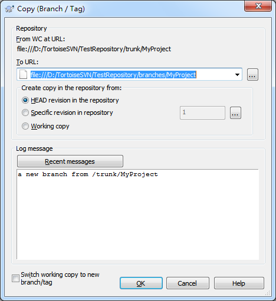
5. Checkout 分支
右键 TestSVN 目录选择 "TortoiseSVN Update" 即可将刚刚建立的分支下载回本地 , 进入 /branches/MyProject 目录下你会发现其文件结构和 /trunk/MyProject 一模一样 ;
** 6. branch 提交一个新文件**
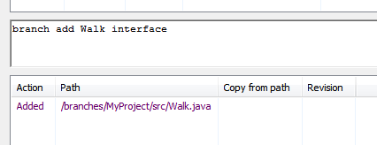
7. trunk 紧接着提交一个修改
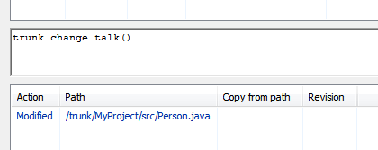
8. branch 再次提交一个修改
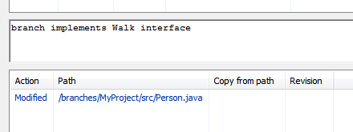
9. 将 trunk 中的修改同步到 branch
6-8 演示的是 branch 和 trunk 在独立/并行地开发 ; 为了防止在 "错误" 的道路上越走越远 , 现在 branch 意识到是时候和 trunk 来一次同步了 (将 trunk 合并到 branch) ;
首先 , 在本地 trunk 中先 update 一下 , 有冲突的解决冲突 , 保证 trunk 和 repository 已经完全同步 , 然后在本地 /branches/MyProject 上右键 , 依次选择 TortoiseSVN -> Merge.. , 在弹出的窗口中选择第一项 Merge a range of revision , 这个类型的 Merge 已经介绍得很清楚 , 适用于将某个分支或主线上提交的多个 revision 间的变化合并到另外一个分支上 ;
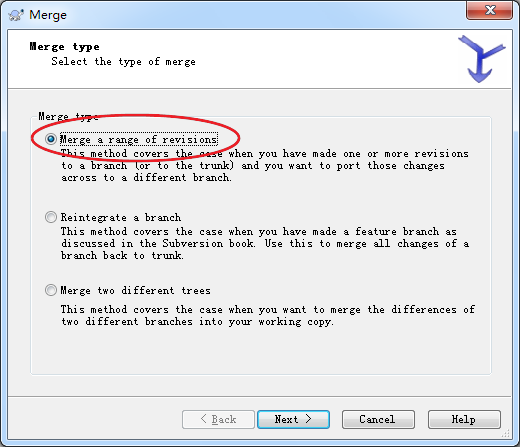
点击 next 后 , 出现如下窗口 :
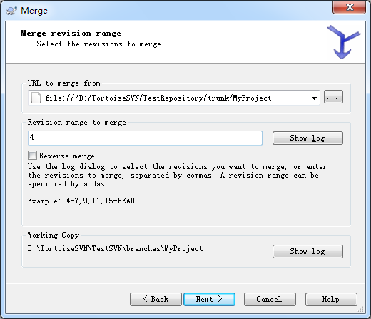
由于是要从 trunk 合并到 branch , 理所当然这里的 URL to merge from 应该填 trunk 的路径 , Revision range to merge 很好理解 , 就是你要将 trunk 的哪些 revision 所对应的变化合并到 branch 中 , 可以是某一连串的 revision , 比如 4-7 , 15-HEAD , 也可以是某个单独的 revision 号 ; 由于在 r4 中 , trunk 修改了 Person.java 中的 talk() 方法 , 所以这里的 revision 只需填 4 即可 ; 点击 next 后出现下图 :
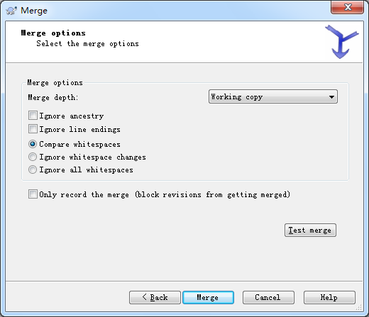
在这里只需保留默认设置即可 ; 在点击 Merge 按钮前你可以先 Test merge 一把 , 看成功与否 , 以及 merge 的详细信息 , 点击 Merge 按钮后 trunk 所做的修改将同步到 branch 中 ;
10. 提交合并后的 branch
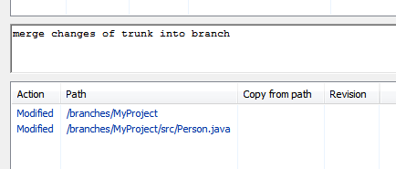
至此 , branch 已经完全和 trunk 同步 , branch 和 trunk 的代码相处很融洽 , 没有任何冲突 , 如果 branch 已经开发结束 , 那是时候将 branch 合并回 trunk 了 ; 当然 , 如果 branch 还要继续开发 , 那你将不断地重复 6-10 这几个步骤 ;
11. 将 branch 合并回 trunk
在本地 /trunk/MyProject 上右键 (注意是在主线的目录上右键) , 依次选择 TortoiseSVN -> Merge... , 在弹出的窗口中 , Merge type 选择第二项 Merge two different trees , 可以理解为合并两个树 :
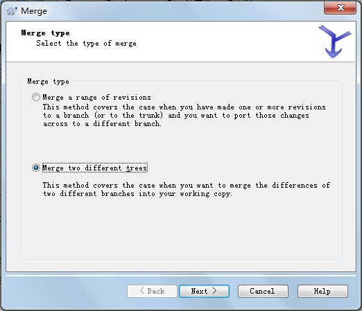
点击 Next 后出现如下窗口 :
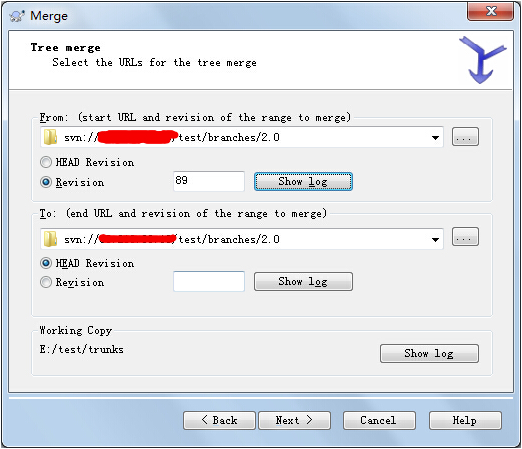
在 From 和 To 中都选择要合并的分支目录 , 在 From 的 Revision 选择创建分支时的那个 Revision , 具体就是点击 Show log , 选择最下面那一条 , 在 To 的 Revision 选择 HEAD Revision , 也就是最新操作 ;
点击 Next , 下一个页面使用默认项 , 点击Merge :
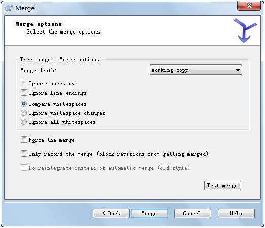
12. 提交合并后的 trunk
so easy...
13. 删除 branch
如果你认为你新加的功能已经开发完成了 , 你可以删除你的分支 ;
Merge a range of revisionMerge two different trees1. SVN：Previous operation has not finished; run 'cleanup' if it was interrupted
安装 SVN 客户端的命令行 , 如下图 :

到 Check out 目录下输入 svn cleanup 就可以了 ;